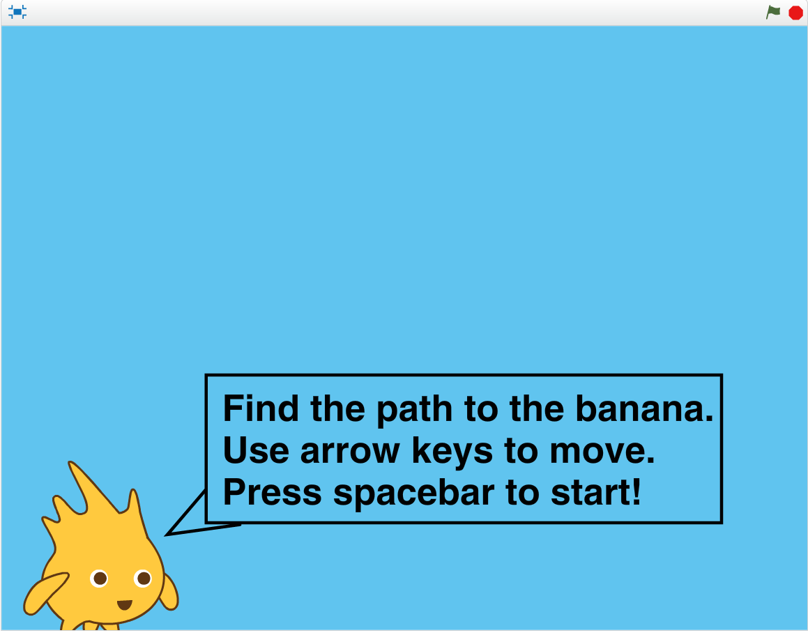
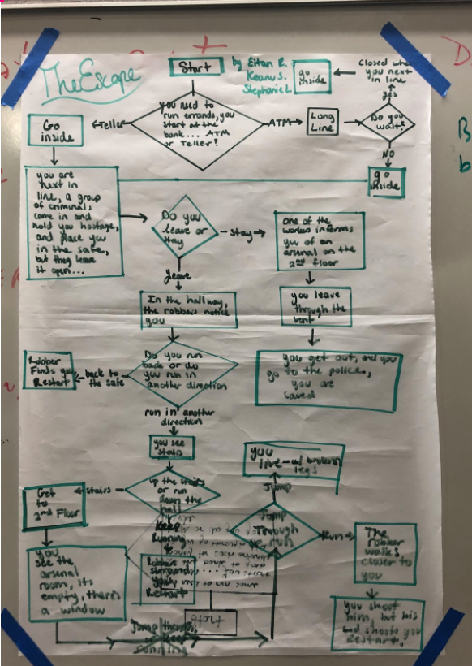
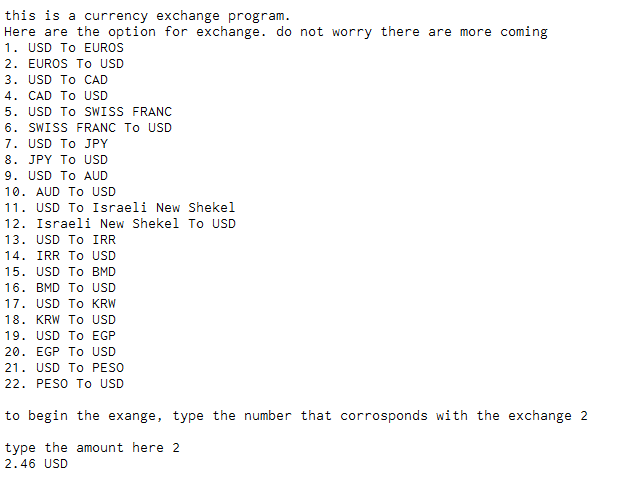
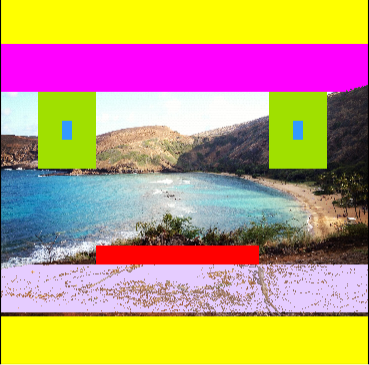
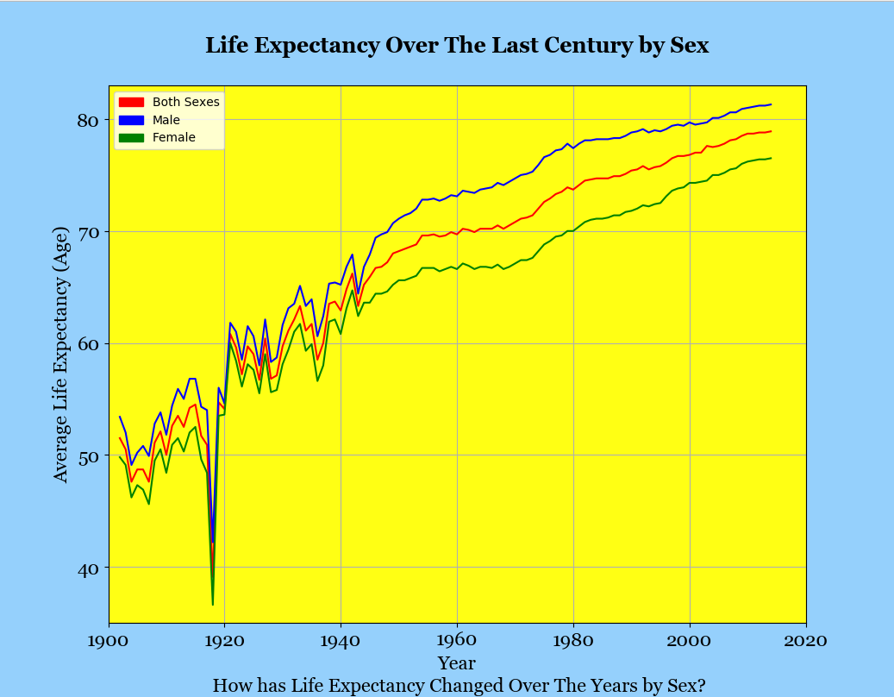
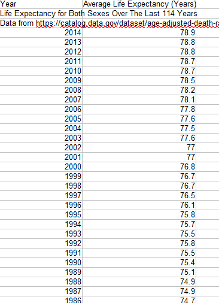
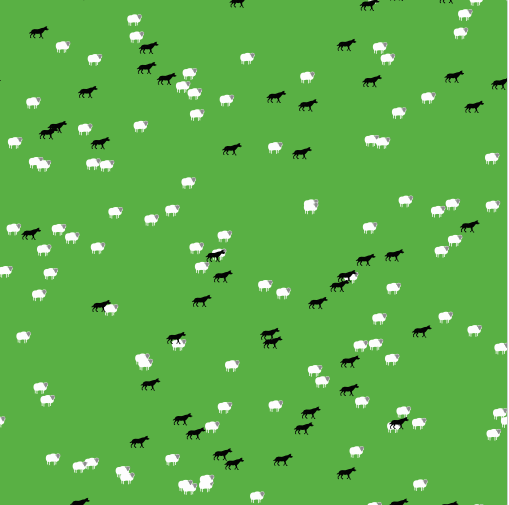
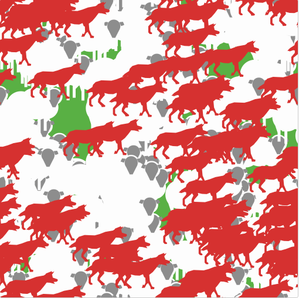
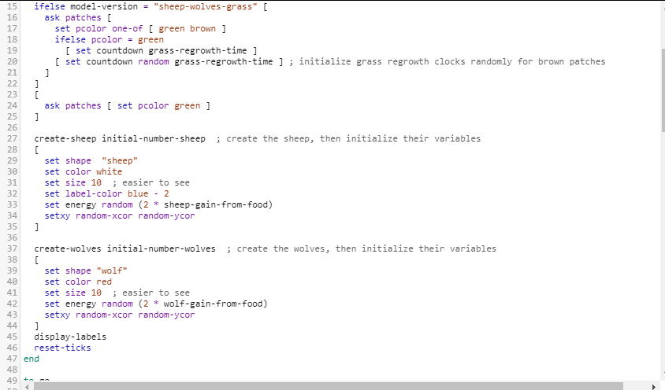

Home
About Me
This is my Portfolio!

Scratch Project

This is a minion memory game. Press the green flag to start.
Find the path to the banana. Use the arrow keys to move. A
wrong move will send you back to the start. There are 3 levels
that get progressively harder. Good luck!
MIT App Inventor Project
 This is a 2 player Tic Tac Toe game. Each player
will either be an X or an O. The goal of the game
is to try to get 3 of the same letters(X and O) in a
row, whether it is diagonal, vertial, or horizontal.
When 3 of the same letters in a row is achieved,
a victory screen will pop up, from their you must
press the reset button in order to play again. Enjoy!
This is a 2 player Tic Tac Toe game. Each player
will either be an X or an O. The goal of the game
is to try to get 3 of the same letters(X and O) in a
row, whether it is diagonal, vertial, or horizontal.
When 3 of the same letters in a row is achieved,
a victory screen will pop up, from their you must
press the reset button in order to play again. Enjoy!
Interactive Fiction Repl.it Project

This is an interactive game where you are trying to escape from a robbery.
Follow the directions and type into the code to try and survive!
Python Project

This is a program that allows you to convert currencies and coins.
Copy the code into the code editor on Canopy and then type
either the currency exchanger defintion or the coin converter
definition in IPython. Then follow the instructions given in the program!
Picture Modification

This is a modification of a picture that I took
at Hanauma Bay in Hawaii. I drew a smiley face
by manipulating pixels and then I used conditional
statemenst to change the color of a certain area if
it was too bright or too dim. Click any of the pictures
to see the code!
GUI Project
 This is a Gui that I altered from the original mypltw code.
I made the background of the canvas green and made it so a
minion is created when the mouse is clicked. I also increased
the maximum number of iterations to 40, so the minions are able
to move for longer if the slider is set accordingly. I also made
the rotation slider able to increase to 180 degrees.
This is a Gui that I altered from the original mypltw code.
I made the background of the canvas green and made it so a
minion is created when the mouse is clicked. I also increased
the maximum number of iterations to 40, so the minions are able
to move for longer if the slider is set accordingly. I also made
the rotation slider able to increase to 180 degrees.
Graphing Python Project


This is a graph that shows the average life ecpectancy over the last
century by sex. This was done through python using from data from
a csv file thats is also shown above. Click the picture of the graph to
download the python code and click the picture of the csv file to download the csv file.
Net Logo Remix



This is a remix of a wolf and sheep predation simulation.
The question that our remix answers is, how is a person
with horrible vision without their glasses able to watch the simultation while
understanding what is going on? We anser this question by increasing the sheep
and wolf size, whil also changing the wolf color to an easier to see red color.
Also, we changed the speed at which the sheep and wolf move to make it easier to see.